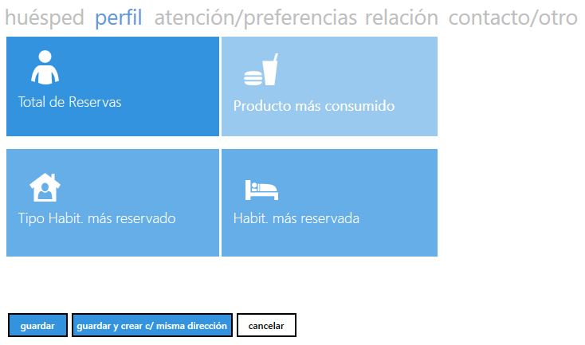
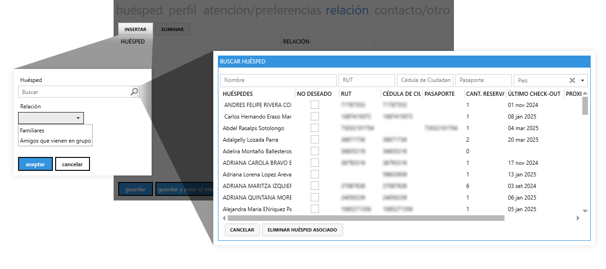
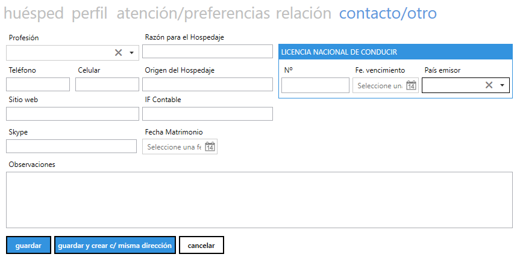
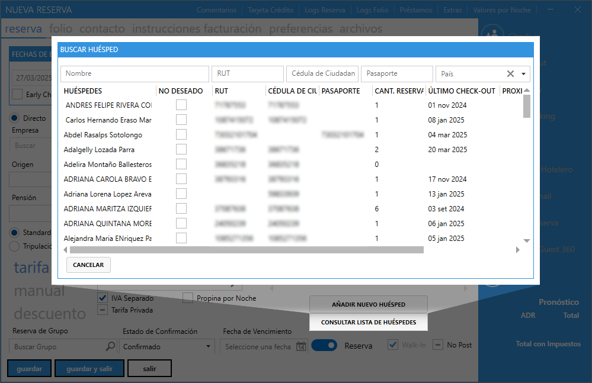

¿Qu√© es el Walk-In?¶
El término Walk-In en la industria hotelera y en sistemas de gestión como Erbon PMS se refiere a una reserva realizada en el momento en que el huésped llega al hotel, sin una reserva previa.
Ejemplo de Walk-In¶
Un huésped llega al hotel sin haber reservado previamente y solicita una habitación disponible. El recepcionista verifica la disponibilidad y procede a registrar la reserva en el sistema desde el menú Recepción ➡ Inlcuir Walk-In.

Diferencias entre walk-in y reserva anticipada¶
| Característica | Walk-In | Reserva anticipada |
|---|---|---|
| Cuándo se realiza | En el momento de llegada | Días, semanas o meses antes |
| Disponibilidad | Sujeta a disponibilidad inmediata | Habitaciones aseguradas |
| Tarifas | Puede tener un precio estándar o más alto | Puede incluir descuentos por reserva anticipada |
| Garantía de habitación | No está garantizada | Sí, si está confirmada previamente |
¿C√≥mo realizar una reserva Walk-In en Erbon PMS?¶
Realizar una reserva en Erbon PMS es un proceso simple y organizado. A continuación, te guiamos paso a paso sobre cómo hacerlo correctamente.

Datos principales de la reserva¶
Antes de registrar una reserva, es importante ingresar la información básica:
Fecha de Check-in:¶
Día en que el huésped llegará al hotel.

Número de noches:¶
Cantidad de noches que permanecerá hospedado.
Fecha de Check-out:¶
Día en que el huésped se irá.

C√≥mo marcar Early Check-In o Late Check-Out en Erbon PMS¶
Si un huésped necesita ingresar antes del horario habitual de check-in o salir después del check-out estándar, es importante indicarlo en la reserva para evitar conflictos operativos y aplicar los cargos correspondientes si es necesario.
-
Activar ✅ Early Check-In (Ingreso anticipado)
Si el huésped llega antes del horario estándar de check-in, marca la casilla "Early Check-In" en la sección "Fechas de Entrada y Salida".
-
Activar ✅ Late Check-Out (Salida tardía)
Si el huésped necesita salir después del horario estándar de check-out, marca la casilla "Late Check-Out" en la misma sección.
Origen de la reserva¶
Indica cómo fue realizada la reserva:
- Directo: Si el huésped hizo la reserva personalmente.

-
Empresa: Si la reserva fue gestionada por una empresa.

Haz clic en la lupa üîç y busca la empresa registrada en el sistema. Luego, selecciona la opci√≥n correcta haciendo doble clic.

✅ Se usa cuando el huésped es un empleado de una empresa que tiene convenio con el hotel.
✅ Puede incluir tarifas corporativas o beneficios especiales.Ejemplo
Un trabajador de "Empresa X" llega al hotel. Como la empresa tiene un acuerdo con el hotel, el empleado paga una tarifa especial o la empresa paga directamente.
-
Agencia: Si la reserva proviene de una agencia de viajes.
Haz clic en la lupa üîç y busca la agencia registrada en el sistema. Luego, selecciona la opci√≥n correcta haciendo doble clic.

✅ Se usa cuando la reserva fue hecha por una agencia de viajes.
✅ Puede implicar comisiones o tarifas especiales.Ejemplo
Una persona reservó a través de "Agencia Y". El hotel debe registrar la agencia para calcular posibles comisiones o acuerdos.
-
Origen: Especifica de dónde proviene la reserva (ej. Sitio web, Teléfono, SiteMinder).

- Segmento: Indica el tipo de cliente (Corporativo, Vacaciones, etc.).
-
- Cuando la reserva es realizada a través de una agencia de viajes o operador turístico.
- Si la reserva proviene de una plataforma de reservas en línea (OTA) como Booking, Expedia, etc.
- En caso de reservas corporativas donde la empresa proporciona un código de confirmación.
Voucher: Si la reserva tiene un número de voucher, introdúcelo aquí.

¿Qué es un voucher en una reserva hotelera?
Un voucher es un documento (físico o digital) emitido por una agencia de viajes, operador turístico o empresa asociada que garantiza la reserva y el pago (total o parcial) del hospedaje. Este código o número identifica la reserva en el sistema del proveedor.
¿Cuándo se debe completar este campo?Ejemplos de valores a ingresar en este campo:
- 123456-XYZ (Número de voucher de una agencia de viajes)
- EXP-789456 (Código de confirmación de Expedia)
- CORP-20240321 (Reserva corporativa con número de referencia)
Importante
-
Si la reserva es directa (sin intermediarios), este campo puede quedar vacío.
-
El número del voucher debe coincidir con el documento emitido por la agencia u OTA para evitar discrepancias en la facturación.
-
Representante comercial: Nombre del agente comercial responsable de la reserva.

¿Qué es un representante comercial en una reserva?
Un representante comercial es la persona o entidad que gestiona la reserva en nombre de una empresa, agencia de viajes o cliente corporativo. Puede ser un agente de ventas, un ejecutivo de cuenta o un intermediario que coordina la estadía.
¿Cuándo se debe completar este campo?
- Cuando la reserva ha sido gestionada por un agente de viajes o un ejecutivo de ventas.
- Si la reserva es parte de un acuerdo comercial con una empresa o agencia específica.
- Para identificar y asignar la comisión a un agente comercial.
Ejemplos de valores a ingresar en este campo:
- María López - Agencia XYZ (Agente de viajes que gestionó la reserva)
- Juan Pérez - Corporación ABC (Ejecutivo de ventas de una empresa que reservó habitaciones)
- Carlos Gómez - Expedia (Ejecutivo de cuenta de Expedia que gestiona la reserva)
Importante
-
Si la reserva es directa (sin intermediarios), este campo puede quedar vacío.
-
Si el representante comercial tiene una comisión asociada, asegúrate de configurarla correctamente en el campo correspondiente.
Tipo de hospedaje¶
En sistemas de reservas hoteleras, la pensión generalmente se refiere al régimen de comidas incluido en la estancia, como:
- SA (Sólo Alojamiento)
- AD (Alojamiento y Desayuno)

Cantidad de personas a hospedar¶
Indica la cantidad de personas que se hospedarán:
- Adultos: Número de adultos en la habitación.
- Niños: Cantidad de niños en la reserva.
- Bebés: Si hay bebés en la reserva.
Tipo de reserva¶
Selecciona el tipo de reserva según el caso:
| Tipo | Descripción |
|---|---|
| Standard | Huésped regular sin condiciones especiales, genera cobro normal. |
| Invitado | Persona alojada como cortesía, no genera cargos financieros. |
| Intercambio | Estancia producto de un acuerdo entre hoteles, no genera cargos financieros. |
| Tripulación | Indica que un empleado de aerolínea o aeropuerto está hospedado, generando facturación. |
| House-Use | Uso interno del hotel (por ejemplo, empleados en capacitación o inspecciones), no genera cargos financieros. |
| Propietario | Indica que el dueño de la unidad habitacional (UH) se hospedará, sin generar cobros automáticos. |

Tarifas y descuentos¶
Tarifa:¶
Haz clic en la lupa üîç para seleccionar la tarifa correspondiente al per√≠odo de la reserva, hacer doble clic.
- TARIFA EXENTA: Utilizada para reservas que no generan cargos fiscales, aplicarla a la mayoria de las reservas.
- Standard Rate: Tarifa estándar aplicada a las reservas que llegan de SiteMinder.
Opciones adicionales:
- IVA Separado: Marca esta casilla si el IVA debe desglosarse en la factura.
- Tarifa Privada: Marca esta casilla si la tarifa no debe mostrarse en canales públicos.
- Propina por Noche: Marca esta opción si se debe agregar una propina automática por cada noche de estancia.
Manual:¶
Ingresa el precio de la tarifa manualmente (opcional).
- Moneda: Escoge la moneda en la lista desplegable (en este caso, "$").
- Valor por Noche: Ingresa el Valor por Noche (en la imagen es 130,000.00).
-
- IVA Separado: Marca esta casilla si el IVA debe desglosarse en la factura.
- Tarifa Privada: Marca esta casilla si la tarifa no debe mostrarse en canales públicos.
- Propina por Noche: Marca esta opción si se debe agregar una propina automática por cada noche de estancia.
Opciones adicionales:
Descuento:¶
Especifica si hay algún descuento en la reserva.
Grupo de reserva¶
Si el hu√©sped pertenece a un grupo, haz clic en el √≠cono de la lupa üîç para buscar un grupo existente.
Este campo te permite asociar la reserva individual a un grupo si forma parte de uno. Un grupo puede representar, por ejemplo, una agencia de viajes, una empresa o un evento con varias habitaciones reservadas.
Si la reserva es individual, puedes dejar este campo vacío.
Confirmaci√≥n de la reserva¶
Estado de Confirmaci√≥n¶
Indica si la reserva está confirmada o en espera de confirmación. En la imagen aparece como Confirmado, lo que significa que la reserva ya está asegurada.
¿Qu√© hacer?¶
Si la reserva está confirmada, no necesitas cambiar nada. Si aún está pendiente de aprobación, selecciona otro estado del menú desplegable (En Confirmación):

Fecha de Vencimiento¶
Es la fecha límite hasta la cual la reserva estará activa antes de que se cancele automáticamente si no se confirma o no se presenta el huésped.
¿Qu√© hacer?¶
Haz clic en el √≠cono del calendario üìÖ y selecciona la fecha en la que la reserva deber√≠a expirar.
Importante
Este campo es útil si la reserva aún no ha sido confirmada.

Opciones adicionales¶
Son configuraciones adicionales sobre cómo se manejará la reserva:
Reserva¶
Indica que esta es una reserva activa. Si desactivas esta opción, la reserva no será procesada en el sistema.
Info
Esta opción en una reserva walk-in siempre permanecerá activa, mientras que en reservas anticipadas sí se podrá deshabilitar.
Walk-In (Casilla Marcada)¶
Significa que el huésped llegó sin haber hecho una reserva previa. Si la reserva fue hecha con anticipación, puedes desmarcar esta opción.
No Post (Casilla Vac√≠a)¶
Evita que la cuenta del hu√©sped genere cargos adicionales despu√©s de la reserva. üõ† Activa esta opci√≥n solo si el hu√©sped no podrá hacer cargos extra (por ejemplo, minibar, room service, etc.).

HABITACI√ìN¶
Esta sección permite seleccionar la habitación específica para la reserva de un huésped.
Categor√≠a¶
Permite seleccionar el tipo de habitación que se asignará a la reserva. Estas son las opciones disponibles:
| Tipo de habitación | Descripción |
|---|---|
| STD SGL | Habitación estándar individual |
| STD DBL | Habitación estándar doble |
| STD TPL | Habitación estándar triple |
| STD CPL | Habitación estándar cuádruple |
| JR SGL | Habitación junior suite individual |
| JR DBL | Habitación junior suite doble |
| JR TWIN | Habitación junior suite twin (dos camas) |
| STD TWIN | Habitación estándar Twin (dos camas) |
Up/Downgrade¶
Permite modificar la categoría de la habitación si se requiere hacer una mejora (upgrade) o una reducción (downgrade).
Ir a Opciones disponibles para más información.

Habitaci√≥n¶
Este campo permite asignar una habitación específica dentro de la categoría elegida.
¿Qu√© hacer?¶
Haz clic en "Buscar" y selecciona elegir habitación manualmente para abrir una lista de habitaciones disponibles dentro de la categoría seleccionada.
Visualizara un cuadro donde podra aplicar diferentes filtros, como:
- Tipo Habitación: Permite filtrar por el tipo de habitación, puedes ir a Categoría para más información.
-
Características Habitación: Permite filtrar por características especificas de la habitación. Selecciona la que más de adapte a la reserva del huesped y clic en CONFIRMAR.
Info
Si en algún momento quieres quitar todo lo seleccionado en Caterísticas Habitación, debe ingresar nuevamente haciendo clic en la lupa
Pesquisar... üîé, quitamos todos los ✅ y por último en CONFIRMAR. -
Habit. sin reserva en la noche anterior: Permite filtrar las habitaciones que no fueron ocupadas ni reservadas en la noche previa (anterior).

- Indica qué habitaciones están listas para asignarse sin restricciones de tiempo.
- Permite asignar la habitación sin necesidad de esperar la limpieza, ya que no fue usada la noche anterior.
-
Solo habitación disponible en este momento: Permite filtrar las habitaciones que solo estan disponible en el momento.
- Advierte al personal de la escasez de disponibilidad, lo que ayuda a gestionar la demanda.
- Crear sensación de urgencia para incentivar al huesped: si no toma la habitaciónm puede perder la oportunidad.
- Brindar información clave a los empleados del hotel sobre la capacidad actual.
-
Después de aplicar los filtros necesarios, selecciona la habitación específica que deseas asignar haciendo doble clic.

<!--
‚úîÔ∏è Conclusi√≥n¶
1️⃣ Selecciona la categoría de habitación según la reserva del huésped.
2️⃣ Si es necesario, cambia la categoría con Up/Downgrade.
3️⃣ Busca y asigna una habitación específica dentro de la categoría elegida.
üìå Importante: Verifica la disponibilidad antes de confirmar la asignaci√≥n de la habitaci√≥n. -->
Registro del hu√©sped¶
A√±adir nuevo hu√©sped:¶
Permite registrar un nuevo huésped nacional o extranjero en el sistema. Se usa cuando un cliente llega sin una reserva previa (Walk-in) o cuando se necesita agregar manualmente un nuevo huésped a una reserva existente.
Para un cliente nacional (Colombiano) se realiza el registro de la siguiente forma:

Recomendación
Previamente, tener un formato con los campos necesarios para realizar el registro del cliente,
- Permite ubicar al huesped con mayor rapidez en la habitación asignada, brindando comodidad al cliente.
- Permite tener tiempo de registrar al huesped con más tranquilidad, teniendo el formato lleno.
Pesta√±a Hu√©sped¶
Comenzamos registrando la informacion personal del cliente:
Datos generales del hu√©sped¶
- Nombre: Nombre del huésped.
- Género: Opción desplegable para seleccionar el género (Masculino o Femenino).
-
Título: Opción para agregar títulos como Sr. o Sra./Sta.
Importante
Esta opción se activara cuando seleccione el género del huesped, Sr. para Masculino y Sra./Sta. para Femenino
-
Estado Civil: Selección del estado civil del huésped.
- Divorciado
- Casado
- Solo
- Viudo
-
No deseado: Permite gestionar la admisión de huéspedes problemáticos, permitiendo que el sistema tome medidas según el caso. Cuando la casilla (✅ No deseado) esta marcada, podra seleccionar las siguientes acciones:
Acción Descripción Erbon permite la reserva A pesar de estar marcado como "No deseado", el sistema aún permite que el huésped realice reservas sin restricciones. Puede ser útil para casos en los que el huésped tiene un historial problemático, pero se le sigue permitiendo el acceso. Erbon genera alerta El sistema permitirá hacer la reserva, pero generará una alerta interna para el personal. Puede indicar que el huésped tiene antecedentes o requiere atención especial antes de confirmar su estadía. Erbon no permite reservas El sistema bloquea completamente la posibilidad de hacer una reserva para este huésped. Se usa en casos de huéspedes con prohibición total de hospedaje, como deudores o personas con incidentes graves. -
Cliente / Proveedor: Define si el huésped es un cliente o un proveedor del sistema. facilitando la gestión de clientes y proveedores según sus interacciones con el establecimiento
- ✅ Cliente: Un cliente puede ser alguien que hace reservas y se hospeda en el hotel.
- ✅ Proveedor: Indica que la persona es un proveedor de bienes o servicios para el establecimiento.
-
✅ Cliente y ✅ Proveedor: Significa que la persona puede ser tanto huésped como proveedor.
Ejemplo
Un conferencista que se hospeda en el hotel y también ofrece servicios de capacitación al personal.
Informaci√≥n adicional¶
- País: Indica la nacionalidad del huésped.
- Fecha de Nacimiento: Permite registrar la edad del huésped.
-
Tipo de Huésped: Permite clasificar a los huéspedes según su relación con el hotel. Cada opción tiene un propósito específico:
Tipo Descripción VIP Huéspedes con beneficios exclusivos, como descuentos, acceso a áreas privadas o servicios personalizados. Operador Se refiere a agentes de viajes, agencias u otras empresas que gestionan reservas en nombre de los huéspedes. Direto (Directo) Huéspedes que hacen su reserva sin intermediarios, es decir, a través del sitio web del hotel, por teléfono o en la recepción. -
Email: Permite ingresar el correo electrónico del huésped.
- Frecuente: Indica si el huésped es recurrente.
-
Autoriza la divulgación de sus datos a servicios terceros: Permite que los datos del huésped sean compartidos con terceros.
Importante
Es fundamental solicitar el consentimiento del cliente para el tratamiento de sus datos personales, garantizando el cumplimiento de la legislación vigente y evitando posibles problemas legales.
Direcci√≥n¶
Se divide en:
- Dirección Fiscal: Es la dirección oficial registrada ante entidades gubernamentales y fiscales para efectos de facturación, impuestos y notificaciones oficiales.
-
Dirección Propia: Es la dirección personal o de residencia de un individuo.
Info
En conclusión, se puede elegir entre registrar una dirección fiscal (si es para trámites administrativos) o una dirección propia (para uso personal o residencial).
Los campos incluyen:
- **Dirección**: Permite registrar calle y número de residencia.
- **Barrio**: Permite registrar el nombre del barrio donde se ubica la dirección.
- **Código Postal**: Permite registrar código postal de la dirección.
- **Ciudad**: Permite registrar la ciudad donde se encuentra la dirección.
- **Departamento**: Permite seleccionar por medio de una lista desplegable el departamento correspondiente.
- **País**: Permite selecionar por medio de una lista desplegable el país correspondiente.
Documentos de identificaci√≥n¶
-
Cédula de Ciudadanía
- Primero, campo para ingresar el número de cédula del huesped.
- Segundo, campo para seleccionar la fecha de vencimiento.
- Tercero, lista desplegable para seleccionar el país donde se registro el documento de identidad.
-
NUIP (Número Único de Identificación Personal) Este es el mismo número que podras encontrar en el registro civil, tarjeta de identidad y cédula de ciudadania. Identifica a cada colombiano desde su nacimiento hasta el día de su muerte y solo aplica a las personas nacidas despues del 30 de septiembre del 2003.
-
RUT (Registro Único Tributario)
Permite ingresar el número del RUT, un documento emitido por la DIAN (Dirección de Impuestos y Aduanas Nacionales) en Colombia. Sirve para identificar a personas y empresas en el sistema tributario.
También cuenta con un selector de país, lo que sugiere que el RUT podría aplicarse en otros países si es un número fiscal similar. -
Tarjeta de Identidad
Permite ingresar el número de la tarjeta de identidad, documento de identificación para menores de edad en Colombia (7 a 17 años). -
Registro Civil
Permite ingresar el número de registro civil, documento de identificación de los menores de 7 años en Colombia.
Pesta√±a perfil¶
Es una sección donde se recopila información clave sobre el huésped para analizar su historial y comportamiento dentro del sistema. Aquí hay una descripción detallada de los elementos que pueden estar incluidos en esta sección y su funcionalidad:
-
Total de Reservas: Representa la cantidad de veces que el huésped ha realizado reservas en el sistema. Esto ayuda a medir la frecuencia de visitas del cliente y su lealtad hacia el establecimiento.
-
Producto Más Consumido: Muestra el producto o servicio más adquirido por el huésped, como bebidas, comidas o servicios adicionales del hotel. Puede ayudar a personalizar futuras ofertas o sugerencias para el cliente.
-
Tipo de Habitación Más Reservada: Indica la categoría de habitación que el huésped ha reservado con mayor frecuencia. Esto puede ayudar al hotel a ofrecer promociones en ese tipo de habitación o a preasignar una habitación similar para futuras visitas.
-
Habitación Más Reservada: Muestra el número de habitación que más veces el huésped ha utilizado. Puede ser útil para asignar la misma habitación a clientes recurrentes, mejorando la experiencia del huésped.

Pesta√±a atencion/preferencias¶
Esta pestaña permite personalizar la experiencia del huésped mediante el registro de observaciones sobre la atención recibida y preferencias personales. Esto puede ayudar al establecimiento a mejorar la fidelización y satisfacción del cliente.
-
Atención Cliente: Permite registrar observaciones o detalles relacionados con la atención brindada al huésped.
-
Preferencias: Permite registrar las preferencias específicas del huésped para futuras reservas o servicios.

Pesta√±a relaci√≥n¶
Permite administrar y registrar los vínculos entre los huéspedes. Su propósito principal es identificar si los huéspedes tienen algún tipo de relación, lo que facilita la gestión de reservas grupales y la personalización de servicios.

Pesta√±a contacto/otro¶
Permite registrar información adicional sobre el huésped, proporcionando detalles de contacto, datos laborales y otros aspectos relevantes para su estadía. Esta pestaña complementa la información básica del huésped y puede ser útil para la administración del hospedaje.
- Profesión: Se puede seleccionar la ocupación del huésped desde una lista desplegable.
- Razón para el hospedaje: Un campo de texto donde se puede ingresar el motivo de la visita, como turismo, negocios, eventos, etc.
- Teléfono y celular: Se registran ambos números de contacto del huésped para facilitar la comunicación.
- Sitio web y Skype: Si aplica, se pueden registrar estos datos, lo que podría ser útil en el caso de viajeros de negocios o influencers.
- Origen del hospedaje: Puede indicar cómo el huésped conoció el alojamiento (recomendación, agencia, sitio web, etc.).
- IF Contable: Posiblemente un número de identificación fiscal o contable, usado en algunos sistemas de facturación.
-
Fecha de matrimonio: Un campo donde se puede seleccionar una fecha específica, útil para parejas que viajan en luna de miel o aniversarios.
-
Licencia nacional de conducir: Sección destacada en azul donde se pueden registrar los datos de la licencia de conducción del huésped. Se incluyen los siguientes campos:
- Número de licencia
- Fecha de vencimiento
- País emisor (seleccionable desde un menú desplegable)
-
Observaciones: Un campo de texto amplio donde se pueden registrar comentarios adicionales sobre el huésped, como solicitudes especiales, necesidades médicas o preferencias personales.

Botones de acci√≥n¶
- Guardar: Registra los datos del huésped en el sistema.
- Guardar y crear c/ misma dirección: Guarda el huésped y permite registrar otro con la misma dirección (útil para familias o grupos).
- Cancelar: Descarta los cambios y cierra el formulario sin guardar.
<!-- ---
Conclusi√≥n¶
Este formulario es clave en la gestión de huéspedes, ya que permite registrar información personal, de contacto y fiscal de manera organizada. Su diseño facilita la administración de clientes recurrentes y agiliza el proceso de check-in en hoteles o alojamientos. -->
Consultar lista de hu√©spedes:¶
Permite verificar si un huésped ya existe en el sistema antes de agregarlo nuevamente. Facilita la búsqueda y reutilización de datos de clientes recurrentes para agilizar el check-in.

Barra lateral¶

Check-in¶
- Registra la llegada del huésped.
- Asigna una habitación y confirma su estadía.
¿Cuándo usarlo?
✅ Se usa después de haber creado la reserva en el sistema.
Check-out¶
- Finaliza la estadía del huésped.
- Genera la factura con cargos adicionales (ej. minibar, restaurante).
- Libera la habitación para futuras reservas.
¿Cuándo usarlo?
✅ Solo cuando el huésped se va y se han pagado todas las cuentas.
No-show¶
- Marca que el huésped no llegó a su reserva.
- Puede generar una penalización según la política del hotel.
¿Cuándo usarlo?
⚠ No aplica, ya que el huésped está presente.
Overbooking¶
- Indica que el hotel ha vendido más habitaciones de las disponibles.
- Permite reasignar huéspedes a otro hotel o dar compensaciones.
¿Cuándo usarlo?
⚠ Si el hotel no tiene habitaciones disponibles, debes informar al huésped y ofrecer alternativas.
Cancelar¶
- Anula una reserva antes del check-in.
- Puede generar cargos según la política del hotel.
¿Cuándo usarlo?
⚠ No aplica, a menos que se haya creado la reserva y el huésped decida irse antes de hacer check-in.
Registro Hotelero¶
- Genera un documento oficial con los datos del huésped.
¿Cuándo usarlo?
✅ Siempre.
✅ Es necesario para registrar la identidad del huésped.
Enviar Email¶
- Envía confirmaciones de reserva, facturas o promociones al huésped.
¿Cuándo usarlo? ✅ Puedes enviarlo después del check-in, si el huésped proporciona un correo.
Form. Reserva¶
- Muestra un resumen de la reserva con detalles como fechas, habitación y pago.
¿Cuándo usarlo?
✅ Después de crear la reserva, para mostrarle al huésped los detalles antes de confirmar.
Enviar a Guest 360¶
- Guarda información del huésped en un sistema de gestión de clientes (CRM).
- Permite ver historial de visitas y preferencias.
¿Cuándo usarlo?
✅ Si el huésped es recurrente, puedes guardarlo en la base de datos.
Internet¶
- Posiblemente permite activar acceso a internet para el huésped.
¿Cuándo usarlo?
✅ Si el hotel requiere un código de acceso, puede generarse aquí.
Secci√≥n de Pron√≥stico (ADR y Total)¶
- ADR (Average Daily Rate): Tarifa promedio de la habitación por día.
- Total: Monto total de la reserva antes de impuestos.
Total con Impuestos: Muestra el precio final que el huésped debe pagar.
¿Cuándo usarlo? ✅ Para verificar el costo total antes de confirmar la reserva.
Folio¶
La pestaña Folio permite visualizar y gestionar los cargos pendientes de un huésped, agencia o empresa en un hotel. Desde esta sección, se pueden revisar consumos, aplicar filtros por tipo de cuenta, seleccionar cargos específicos para liquidación y ver un resumen del total a pagar. También facilita el control de pagos, descuentos y adelantos, asegurando un manejo eficiente de la facturación y saldo del cliente.
Cargos pendientes¶
Filtros y opciones de selecci√≥n¶
- Seleccionar Todos: Permite marcar todos los conceptos listados.
- Instrucciones de Fechamento: Opciones para filtrar cargos según el tipo de cuenta:
- Todos: Muestra todos los cargos.
- Huésped: Solo los cargos generados por el huésped.
- Agencia: Cargos asignados a una agencia.
- Empresa: Cargos facturados a una empresa.
Categor√≠as de Cargos¶
Cada categoría representa un tipo de servicio consumido y está marcada con una casilla de selección:
- Alimentos & Bebidas
- Alojamiento
- Auditorio
- Auditorio Altamar
- Auditorio Perla
- Lavandería
Estas categorías pueden seleccionarse individualmente para visualizar o gestionar los cargos relacionados.
Lista de Cargos Pendientes¶
Cada fila representa un cargo que aún no ha sido liquidado. Las columnas incluyen:
- CUENTA: Identificador del cargo.
- FECHA VALOR: Fecha en la que se registró el consumo.
- DESCRIPCIÓN: Detalles del servicio o producto consumido.
- CANT.: Cantidad adquirida.
- DESCUENTO: Descuento aplicado.
- MONEDA (MON.): Unidad monetaria del cargo.
- TOTAL: Importe total del cargo.
- HUÉSPED: Indica si el cargo está asociado a un huésped (D = Deuda).
Ejemplo de cargos listados
- Lomo de Res: $44,000.00
- Soda: $8,000.00
- Alojamiento Exento (3 días): $180,000.00 - $210,000.00
Resumen de Pagos¶
En la parte inferior de la pantalla se encuentran los montos totales por categoría:
- A Pagar
- Alimentos & Bebidas: $52,000.00
- Alojamiento: $570,000.00
- Pagado
- Adiant (Adelanto): $0.00
- Total General: -$622,000.00 (Saldo negativo indica deuda pendiente).
¿Qu√© Puedes Hacer en Esta Secci√≥n?¶
- Revisar los cargos pendientes antes de procesar el pago.
- Aplicar filtros según el tipo de cuenta (Huésped, Agencia, Empresa).
- Seleccionar cargos específicos para liquidación.
- Gestionar descuentos o aplicar pagos parciales.
- Ver el balance total para determinar cuánto falta por pagar.
Contacto¶
La pestaña Contacto es útil para registrar y administrar contactos adicionales asociados a una reserva, empresa o agencia. Aunque al registrar un huésped ya se solicita su información de contacto, esta sección permite agregar datos de otras personas relevantes, como acompañantes, responsables de la reserva, agencias de viaje o empresas que gestionan la estancia. También puede servir para actualizar información de contacto sin modificar los datos originales del huésped principal.
Instrucciones facturaci√≥n¶
La pestaña Instrucciones Facturación permite definir a quién se le facturarán los distintos cargos generados en el folio de la reserva. En esta sección, se pueden asignar los costos de servicios específicos (como alimentos y bebidas, alojamiento, lavandería y auditorios) a diferentes destinatarios, como el huésped, una agencia o una empresa.
Funciones principales:¶
- Distribución de cargos: Se puede asignar cada tipo de gasto a una entidad diferente, permitiendo separar la facturación si es necesario.
- Flexibilidad en la facturación: En casos donde una agencia o empresa cubre parte de los gastos del huésped, se puede configurar que ciertos cargos vayan a la empresa y otros al huésped.
- Transparencia en la facturación: Permite organizar la facturación para evitar errores en la asignación de costos y garantizar que cada entidad reciba la factura correspondiente.
Info
Esta pestaña es útil en situaciones donde los gastos de una reserva no son asumidos únicamente por el huésped, sino que pueden dividirse entre diferentes responsables.
Preferencias¶
La pestaña Preferencias permite registrar información detallada sobre las necesidades y requerimientos específicos del huésped para una estancia personalizada.
Funciones principales:¶
La pestaña Preferencias permite registrar información adicional sobre las preferencias y necesidades específicas del huésped durante su estadía.
-
Preferencias del huésped: Aquí se pueden almacenar detalles importantes sobre la estadía, como:
- Tipo de habitación preferida (externa, interna, con vista al manglar o a la bahía).
- Necesidades especiales, como accesibilidad, alergias o restricciones dietéticas.
-
Atención al cliente: Esta sección permite registrar observaciones relevantes sobre el huésped para mejorar su experiencia, tales como:
- Requerimientos específicos dentro de la habitación, como doble toalla en el baño u otros artículos adicionales.
- Comentarios sobre estadías anteriores y solicitudes recurrentes, con el fin de ofrecer un servicio más personalizado.
Info
En definitiva, esta pestaña permite optimizar la atención al huésped, asegurando que sus preferencias sean consideradas para ofrecer un servicio más personalizado y satisfactorio.
Archivos¶
En la pestaña Archivos, se pueden gestionar documentos relacionados con la reserva, permitiendo su almacenamiento, consulta y descarga.
Funciones principales:¶
- Inserción de archivos: Permite adjuntar documentos relevantes, como identificaciones, comprobantes de pago o registros específicos de la estancia.
- Eliminación de archivos: Opción para borrar documentos que ya no sean necesarios.
- Visualización: Posibilita la revisión del contenido sin necesidad de descargarlo.
- Descarga: Facilita la descarga de los documentos almacenados.
Descripci√≥n de las columnas:¶
- Descripción: Indica el propósito o contenido del archivo adjunto.
- Archivo: Muestra el tipo de archivo almacenado (ejemplo: .jpg, .pdf, .docx).
- Creada por: Nombre del usuario que subió el archivo.
- Creada el (fecha real): Fecha en la que el archivo fue añadido al sistema.
Info
Esta funcionalidad permite centralizar y organizar la documentación del huésped de manera eficiente.